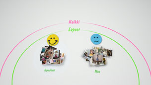
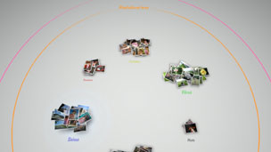

Valokuvien järjestäminen
Valokuvien ryhmitteleminen
Voit valita tapahtumia ja ryhmitellä valittujen tapahtumien valokuvia käyttämällä seuraavassa kuvattuja vaihtoehtoja. Valitse ryhmiteltävät valokuvat sisältävät tapahtumat, paina  -näppäintä ja valitse sitten
-näppäintä ja valitse sitten  (Ryhmittele). Jos haluat rajoittaa ryhmiteltyjen valokuvien määrää, valitse ryhmiteltävät valokuvat sisältävä ryhmä tai ryhmät ja ryhmittele niiden sisältö uudelleen käyttäen jotakin toista (Ryhmittele) -kohdan vaihtoehtoa.
(Ryhmittele). Jos haluat rajoittaa ryhmiteltyjen valokuvien määrää, valitse ryhmiteltävät valokuvat sisältävä ryhmä tai ryhmät ja ryhmittele niiden sisältö uudelleen käyttäen jotakin toista (Ryhmittele) -kohdan vaihtoehtoa.
| Päivämäärä/aika | Ryhmittelee valokuvat niiden ottamispäivän ja kellonajan mukaan. |
|---|---|
| Henkilöiden määrä | Ryhmittelee valokuvat niissä näkyvien ihmisten määrän mukaan. |
| Ikäryhmä | Ryhmittelee valokuvat niissä näkyvien ihmisten suhteellisen iän mukaan. |
| Ilme | Ryhmittelee valokuvat niissä näkyvien ihmisten kasvonilmeiden mukaan. |
| Väri | Ryhmittelee valokuvat niissä näkyvien värien mukaan. |
| Kameran tyyppi | Ryhmittelee valokuvat sen mukaan, minkä mallisella kameralla ne on otettu. |
| Pelit | Ryhmittelee valokuvat pelin nimen mukaan. |
| Albumi | Ryhmittelee valokuvat XMB™-näytön kohdassa  (Kuvat) luotujen albumien mukaan. (Kuvat) luotujen albumien mukaan. |
Vihjeitä
- Jos valitset [Valitse kaikki], kaikki [Kirjastoalue]-kohdan valokuvat ryhmitellään valitsemasi vaihtoehdon mukaan.
- Ryhmittely perustuu valokuvien analysointiin, joka saattaa joissakin tapauksissa tuottaa odottamattomia tuloksia.
- Voit luoda ryhmitellyistä valokuvista soittolistan.
Esimerkkejä ryhmitellyistä valokuvista: kuvia hymyilevistä lapsista
1. |
Ryhmittele valokuvat valitsemalla |
|---|---|
2. |
Valitse ryhmä, jonka nimi on [Lapset], ja paina |
3. |
Valitse  |
Esimerkkejä ryhmitellyistä valokuvista: kuvia sinisestä taivaasta.
1. |
Ryhmittele valokuvat valitsemalla |
|---|---|
2. |
Valitse ryhmä, jonka nimi on [Vaakakuva/muu], ja paina |
3. |
Valitse  |
Valokuvien poistaminen
Voit poistaa valokuvan tai albumin valitsemalla sen, painamalla -näppäintä ja valitsemalla  (Poista).
(Poista).
Vihje
Jos poistat valokuvia kohteesta [Kirjastoalue], ne häviävät myös PS3™-järjestelmän tallennustilasta.